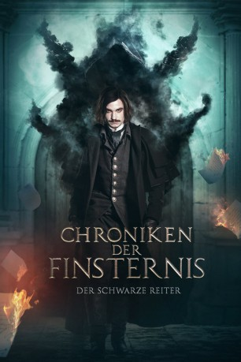

#11464 Chroniken der Finsternis 1 - Der schwarze Reiter
Alternativ: Gogol. Nachalo (Englischer Titel)
 
 IMDB-Wertung: 5.8 / 10
IMDB-Wertung: 5.8 / 10  Metascore: 0
Metascore: 0 
Nikolai Gogol ist ein erfolgloser Schriftsteller, der sich seinen Lebensunterhalt bei der Sankt Petersburger Polizei mit der Dokumentation von Mordfällen verdient. Seit seiner Kindheit wird er von heftigen Anfällen geplagt, bei denen er Visionen hat, die nun immer häufiger an den Tatorten auftreten und zur Aufklärung der Fälle beitragen. Als der berühmte Ermittler Yakow Guro Zeuge eines solchen Anfalls wird, nimmt er den jungen Gogol mit in das kleine Dorf Dikanka, um mit dessen Hilfe eine blutige Mordserie aufzuklären, der bislang drei junge Frauen zum Opfer gefallen sind. Im Zuge ihrer Ermittlungen stoßen die beiden auf ein dunkles Geheimnis.
Jahr: 2017
Dauer: 105 Minuten
FSK: 16
Land: Russland Studio: Capelight PicturesTonspuren:
Untertitel: Deutsch,
Auflösung: 1080p (1920x800) Größe: 6430 MB
Genre: Thriller, Horror, Abenteuer, Krimi, Mystery
Regisseur: Egor Baranov
Drehbuch: Natalya Merkulova, Aleksey Chupov, Tikhon Kornev, Kim Belov, Aleksey Karaulov
Soundtrack: Ryan Otter
Darsteller:
- Sergey Badyuk als Vakula
- Yuliya Frants als Oksana
- Oleg Menshikov als Guro Yakov Petrovich
 Alexander Petrov als Gogol Nikolai Vasilievich
Alexander Petrov als Gogol Nikolai Vasilievich- Evgeniy Stychkin als Binkh Alexander Christophorovich
- Artyom Tkachenko als Danishevskiy Alexey
- Taisiya Vilkova als Danishevskaya Elisaveta Andreevna
- Margarita Adayeva als Varvara
Datei: X:\3-Trilogie(A-F)\Chroniken der Finsternis\Chroniken der Finsternis 1 - Der schwarze Reiter (2017, FSK16, 1920x800).mkv seit 13.07.2019
Festplatte: HD Collection-2(A-Z)-3(A-M)
 Alle Filme aus Gruppe '3-Trilogie(A-F)\Chroniken der Finsternis'
Alle Filme aus Gruppe '3-Trilogie(A-F)\Chroniken der Finsternis'